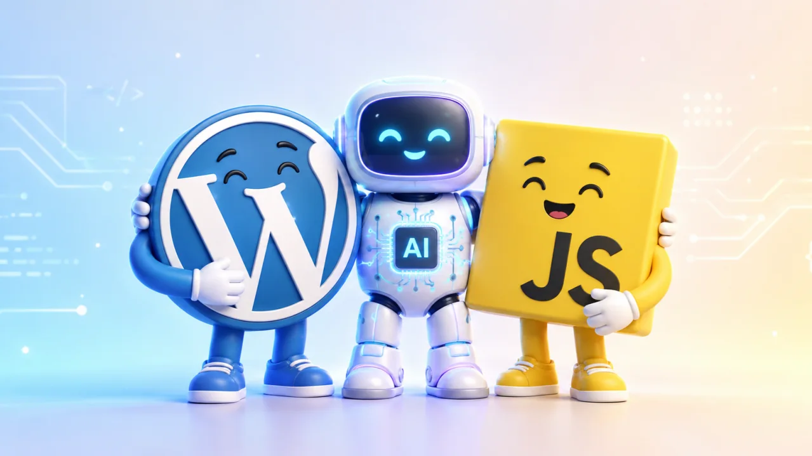

Guga Alves argumenta que a oposição entre WordPress e IA é uma falsa dicotomia, porque compara categorias diferentes: WordPress é um CMS e plataforma extensível; IA é uma abordagem de aceleração e assistência no desenvolvimento. O texto separa WordPress Core, plugins, temas e implementação específica, critica análises rasas sobre performance e escalabilidade, e defende que a decisão correta deve partir do problema, do contexto, da manutenção, do ROI e da capacidade técnica da equipe. Para projetos digitais, o ponto central é que código barato de gerar não significa software barato de possuir, operar e evoluir.
Acessar fonte original ↗